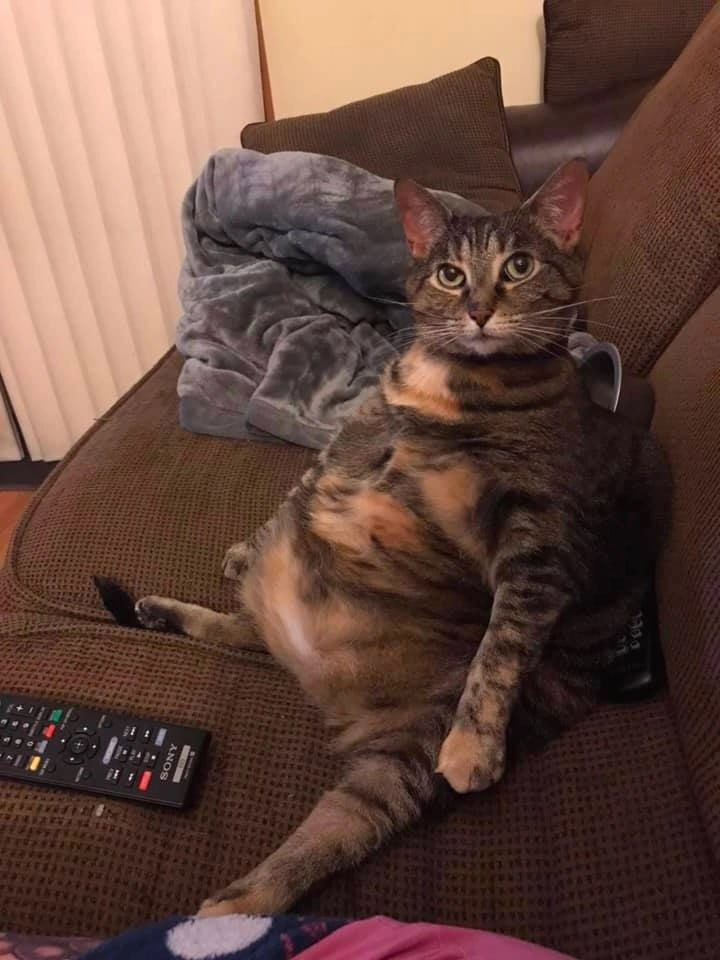

Привет! Я автор этого дневника.
Коллекционирую кукол Monster High и создаю собственные образы. Здесь я сохраняю свои работы, чтобы вы могли ознакомиться с моим творчеством, идеи, эксперименты с материалами и маленькие открытия в процессе творчества.
Хочу, чтобы мои работы приносили радость и удовлетворение — воплощаю задумки в жизнь и делюсь своим кукольным миром.